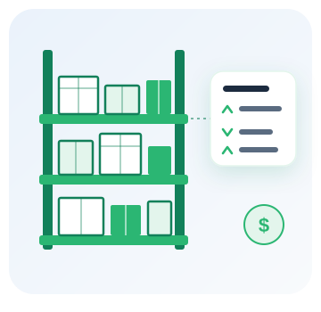

Sabe qué tienes, en qué bodega está y cuánto te costó, sin llevar la cuenta en un cuaderno. Funciona solo, o incluido en tu facturación si facturas con nosotros.
Te responde una persona, y te acompaña también después de empezar.

Por bodegaCada producto con su saldo en cada bodega, y las transferencias registradas.
Con historialEl kárdex guarda cada movimiento con su saldo. Nada se borra.
Con informesCuánto vale, qué se mueve, qué está dormido y qué reponer.
Con acompañamientoTe ayudamos a arrancar con tus existencias bien cargadas.
Tu inventario, hoy y con SysDevUp
Tu stock al día, sin cuadernos ni hojas de cálculo.
HoyCon SysDevUp
HoyLlevas la cuenta de lo que tienes en un cuaderno o en una hoja de cálculo.
Con SysDevUpRegistras lo que compras, lo que sale y lo que ajustas, y el sistema mantiene el saldo de cada producto en cada bodega.
HoyCuando un número no cuadra, no sabes dónde empezó la diferencia.
Con SysDevUpCada movimiento queda anotado con su fecha, su motivo y el saldo que dejó, así que ves exactamente dónde empezó.
HoyCalculas a mano cuánto te costó lo que tienes en bodega.
Con SysDevUpCada compra con proveedor recalcula el costo promedio, y el informe de valorización te dice cuánto vale tu inventario.
HoyTe enteras de que algo se acabó cuando un cliente lo pide.
Con SysDevUpDefines el stock mínimo de cada producto y el sistema te avisa qué hay que reponer.
HoyFacturas en un lado y descuentas el inventario en otro.
Con SysDevUpSi facturas con nosotros, activas una casilla y cada factura autorizada por el SRI descuenta el stock sola. Ya viene incluido en tu plan de facturación. Ver facturación electrónica.
Todo esto, en los cuatro planes
Catálogo con categorías, marcas y unidades
Existencias por producto y por bodega
Kárdex con cada entrada, salida, ajuste y transferencia
Compras con proveedor que recalculan el costo
Costo promedio ponderado por producto
Aviso de stock mínimo, producto por producto
Informes de valorización, rotación, movimientos y reposición
Descuento automático al facturar, si también facturas con nosotros
Acceso desde computadora, tablet o celular
Planes de control de inventarios
Los cuatro planes tienen las mismas funciones; lo único que cambia es cuántos productos activos puedes tener. Todos duran 12 meses.
Si no facturas con nosotros, se contrata solo: puedes empezar por el plan gratuito y cambiarte cuando tu catálogo crezca. Si facturas con nosotros, ya viene incluido en tu plan de facturación.
¿No sabes cuántos productos tienes?Escríbenos por WhatsApp: revisamos tu lista contigo y te decimos con qué plan te alcanza. Y si tu catálogo pasa de 4.500, también lo conversamos.
Preguntas frecuentes sobre el control de inventarios
¿Necesito facturación electrónica para llevar el inventario?
No. El control de inventarios funciona por su cuenta y puedes contratarlo solo. Y si facturas con nosotros, ya viene incluido en tu plan de facturación, con 25, 250, 1.500 o 4.500 productos según el plan, y puedes activar que cada factura autorizada por el SRI descuente el stock automáticamente.
¿Qué diferencia a los cuatro planes?
Solo cuántos productos activos puedes tener: 25 en el plan Gratis, 250 en el plan Básico, 1.500 en el plan Pro y 4.500 en el plan Empresa. Las funciones son exactamente las mismas en los cuatro, y si necesitas más de 4.500 lo conversamos.
¿Qué es un producto activo?
Es un producto que tienes disponible en el sistema. Lo que cuenta para el plan son los activos: si desactivas uno que ya no vendes, la plaza queda libre en el acto y su historial se conserva.
¿Qué pasa si llego al límite de productos?
El sistema te avisa al guardar y no crea el producto. Puedes desactivar alguno que ya no vendas o cambiar a un plan superior; el cambio se aplica de inmediato.
¿Puedo tener varias bodegas?
Sí, en los cuatro planes. Cada producto lleva su saldo por bodega y puedes transferir mercadería entre ellas; la transferencia queda registrada como cualquier otro movimiento.
¿Cómo se calcula el costo de lo que tengo en bodega?
Con costo promedio ponderado. Cada compra que confirmas recalcula el costo del producto, y el informe de valorización te dice cuánto vale el inventario a esa fecha.
¿Ordenamos tu inventario?
Cuéntanos qué vendes y cuántos productos tienes, y te decimos con qué plan empezar.